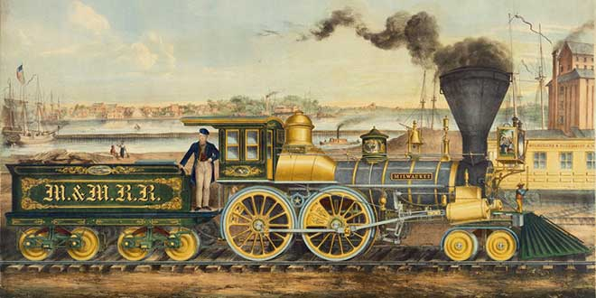
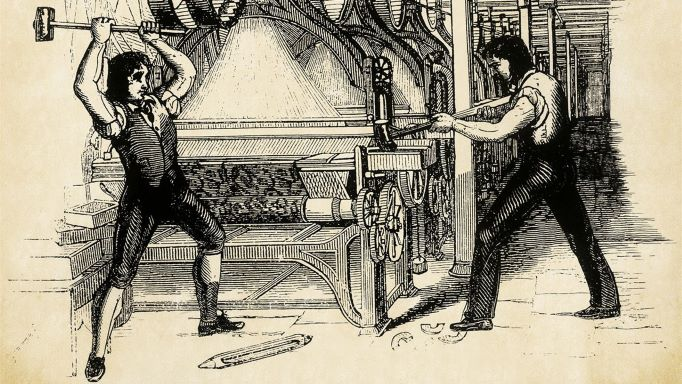

La Revolución Industrial o Primera Revolución Industrial es el proceso de transformación económica, social y tecnológica que se inició en la segunda mitad del siglo xviii en el Reino de Gran Bretaña, que se extendió unas décadas después a gran parte de Europa occidental y América Anglosajona, y que concluyó entre 1820 y 1840. Durante este periodo se vivió el mayor conjunto de transformaciones económicas, tecnológicas y sociales de la historia de la humanidad desde el Neolítico, que vio el paso desde una economía rural basada fundamentalmente en la agricultura y el comercio a una economía de carácter urbano, industrializada y mecanizada.
La Revolución Industrial marca un punto de inflexión en la historia, modificando e influenciando todos los aspectos de la vida cotidiana de una u otra manera. La producción tanto agrícola como de la naciente industria se multiplicó a la vez que disminuía el tiempo de producción. A partir de 1800 la riqueza y la renta per cápita se multiplicó como no lo había hecho nunca en la historia, pues hasta entonces el PIB per cápita se había mantenido prácticamente estancado durante siglos.

A partir de este momento se inició una transición que acabaría con siglos de una mano de obra basada en el trabajo manual y el uso de la tracción animal, siendo estos sustituidos por maquinaria para la fabricación industrial y para el transporte de mercancías y pasajeros. Esta transición se inició hacia finales del siglo xviii en la industria textil, así como en lo relacionado con la extracción y utilización de carbón. La expansión del comercio fue posible gracias al desarrollo de las comunicaciones, con la construcción de vías férreas, canales, y carreteras. El paso de una economía
fundamentalmente agrícola a una economía industrial influyó sobremanera en la población, que experimentó un rápido crecimiento sobre todo en el ámbito urbano. La introducción de la máquina de vapor de James Watt (patentada en 1769) en las distintas industrias, fue el paso definitivo en el éxito de esta revolución, pues su uso significó un aumento espectacular de la capacidad de producción. Más tarde, el desarrollo de los barcos y de los ferrocarriles a vapor, así como el desarrollo en la segunda mitad del xix del motor de combustión interna y la energía eléctrica, supusieron un progreso tecnológico sin precedentes.
Como consecuencia del desarrollo industrial nacieron nuevos grupos o clases sociales encabezadas por el proletariado —los trabajadores industriales y campesinos pobres— y la burguesía, dueña de los medios de producción y poseedora de la mayor parte de la renta y el capital. Esta nueva división social dio pie al desarrollo de problemas sociales y laborales, protestas populares y nuevas ideologías que propugnaban y demandaban una mejora de las condiciones de vida de las clases más desfavorecidas, por la vía del sindicalismo, el socialismo, el anarquismo, o el comunismo.
